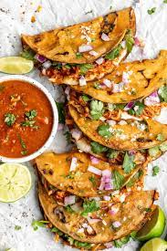

Birria Tacos

birria tacos with broth for dipping
Birria Tacos are a traditional Mexican dish made of slow-cooked beef or goat
that is typically seasoned with spices such as chili peppers, cinnamon, and cumin.
The meat is then shredded and served inside a corn tortilla, often with condiments
such as diced onions, cilantro, and lime..
Birria tacos are usually served with a flavorful broth or consommé on the side,
which is often used as a dip for the tacos.
Birria Tacos are known for their rich, savory flavor and tender,
juicy meat, and are a popular street food in Mexico and among Mexican communities
in the United States
Ingrediants List
- 1-2 lbs Chuck Roast
- 3C beef broth
- 1-2 dried guajillo chiles
- 1 dried ancho chiles
- 1 onion, whole
- 4-6 cloves of peeled garlic
- 1 tomato, whole
- 2 celery sticks
- 1-2 packages of el milagro corn tortillas
- seasonings of choice; I used salt, pepper, tumeric, garlic powder, and cumin
- 1 bag shredded chihuahua cheese
- chopped cilantro
- 3-4 limes
Step by Step
- Season your roast, then lightey sear both sides in your pot
- add in your beef broth and equal parts water
- throw in the rest of your ingrediants to the pot, plus additional seasoning
- bring to a boil, then reduce to a simmer for 1-2 hours
- once ypu've let it simmer, remove onion, garlic, chiles, and tomatos, and blend them together in a blender until a paste forms (adding 1/3C of white vinegar is optional at this stage)
- add blended ingrediants back into the pot with your roast, and let simmer for an additional 2-3 hours (the longer the better)
- once your meat is tender + ready, heat a pan to medium heat
- next, take your corn tortillas, and, one at a time, dip them into the broth and fry them in your pre-heated pan
- melt your cheese onto your tortilla, and add your meat on top with chopped cilantro, onion, and a fresh squeeze of lime
- pour a side of broth for dipping, and enjoy!